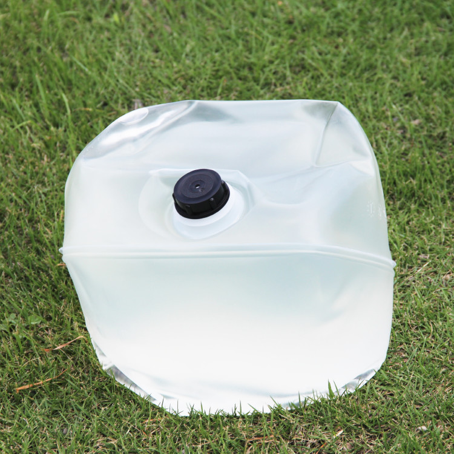
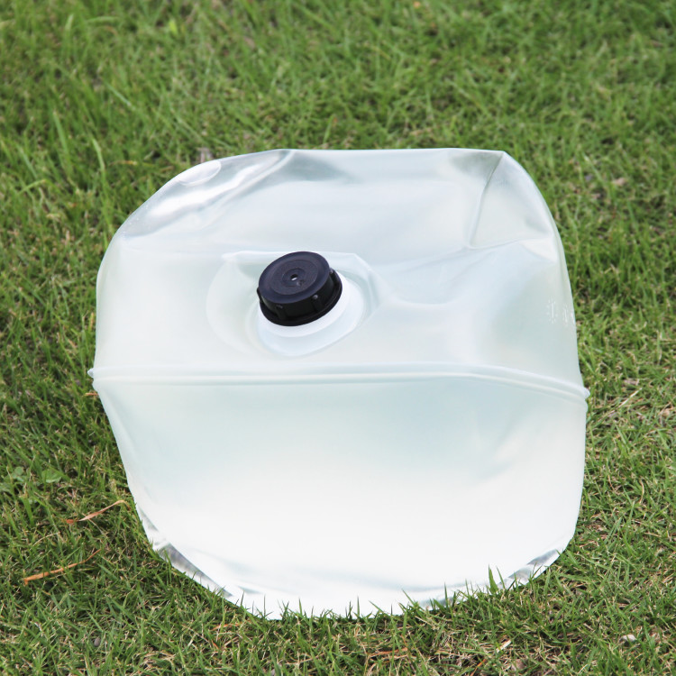
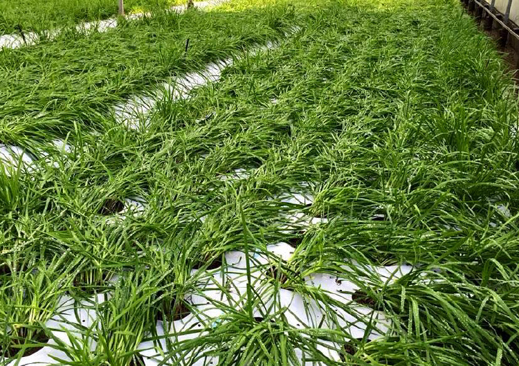
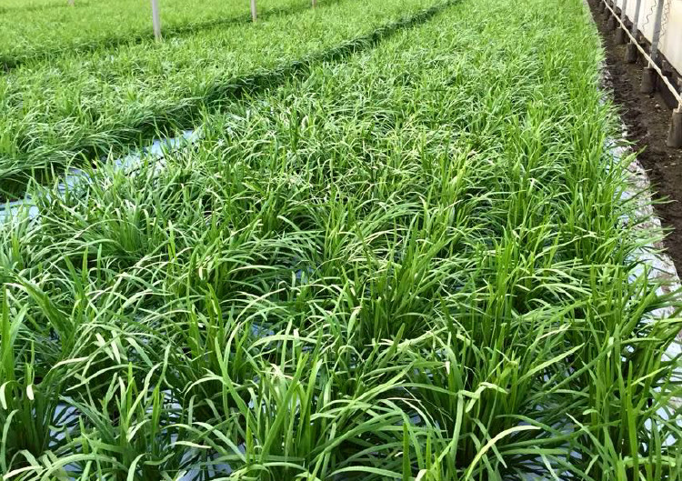
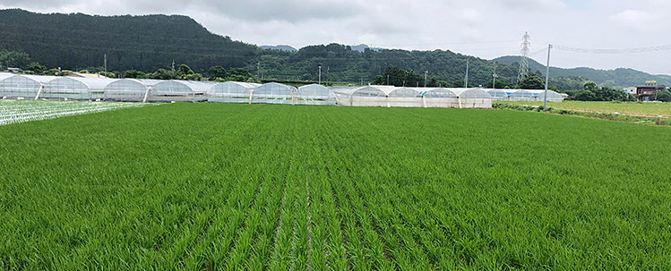

肥料を効率良く吸収
過剰分を減らして土壌バランスを整える「アクティーフ」
アクティーフは、微生物（GS菌）と各種酵素の働きで活性化した微生物の活動により、窒素をはじめ、一般的に吸収しにくいとされているリン・カリ成分の吸収をスムーズに促します。使用量を増やすことで、蓄積された肥料成分を分解・吸収させながら、過剰な成分数値を下げていく効果も期待できます。過剰成分が少なくなることは根張りを良くすることにも繋がります。また、定量を定植時に使用することで、根周りの害を極力なくし、活着(根の定着)や毛細根の再生をとても良くします。
アクティーフは液体なので使い勝手が良く、使用環境・時期を選ばずに使用できます。葉面や灌水使用にも使えます。 働きはスピーディで速効性があります。
アクティーフはこんな方におすすめです！
げんすけアタックは肥料を効率よく作物に働きかけます。土壌中の残留肥料も分解して作物が吸収することができるので、土壌成分のバランスを整えることにも繋がります。さらにバランスよく豊富に含まれた天然ミネラル・アミノ酸・炭水化物の力により、美味しくて元気な作物を育てます。げんすけアタックを活用することは、安価な堆肥や有機質を有益にすることです。
GS菌とは当社が独自で開発した有用微生物菌群（※）です。
- 肥効が遅く、土がメタボになりがちな場合
- リン酸・カリ(P・K)をもっと効率よく吸収させたい方
- 定植時の活着を良くしたい
- 過剰な土壌成分を少しでも少なくしたい
- 有機質肥料の臭気・ハエなどでお困りの方 など
GS菌とは当社が独自で開発した有用微生物菌群（※）です。
（※）硝化細菌（亜硝酸菌・硝酸菌）、光合成細菌、各種消化酵素（タンパク質分解酵素、脂肪分解酵素、炭水化物分解酵素、アルコール分解酵素）、有機酸 他
| 内容量 | 20リットル |
|---|---|
| 内容成分 | GS菌、天然ミネラル（微量要素） |
| 取扱い | 直射日光を避け、冷暗所で保管。 雨や水にあてないようにしてください。 |
特徴＆効果
過剰な肥料を分解し、肥料の吸収を活発に
- 肥料分解が促進され吸収が活発になる
- 土壌に残っている過剰成分の分解・吸収
- EC・PH調整
- なり疲れを改善
- 作物の老化防止
- 発根・発芽を促進。 秀品率・収穫量がアップ
- 肥料過多を速やかに改善、肥料害の防止
- 堆肥料の成分バランス通りに作物が顕著に変化する
- 吸収しにくい成分も効率良く吸収できるようサポートする
- 有機肥料・堆肥から発生する臭気・ガス・害虫の発生を抑える
- 配水管やエバフロー(光を通さない物)の目詰まりの改善と防止
使用例
きゅうり 生育途中での使用例

定植時に「げんすけアタック」を定量使用し、マルチ前に5袋/10a使用。

毛細根活性と共に炭酸ガスも発生させ、成り疲れを軽減させます！
★ 稲 苗への使用例
使い方
アクティーフは冠水パイプ、点滴チューブ、
葉面散布、マルチに使える酵素剤です。
|
アクティーフ 使用量の目安 （10Rあたり） |
|